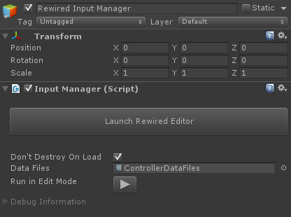

Input Manager
The Input Manager is responsible for storing all the input configuration data and making it accessible during runtime. You must always have one Input Manager in the scene or Rewired input will be unavailable.
IMPORTANT:
- You may have one and only one Input Manager in the scene.
- Do not disable or enable the Input Manager during runtime.
Creating an Input Manager
Create an Input Manager in the scene from the menu: Window -> Rewired -> Create -> Input Manager
- Input Manager (in scene) - Will create the Rewired Input Manager in the current scene.
- Input Manager (prefab) - Will create the Rewired Input Manager as a prefab asset in the project. This is the recommended option to use. (* Do not save the prefab anywhere within the Rewired folder. This will avoid data loss issues should you need to delete and re-install Rewired. *)
Editing Input
The Rewired Editor allows you to create and edit input. Launch the Rewired Editor by clicking on the Rewired Input Manager in the scene hierarchy and clicking the "Launch Rewired Editor" button in the inspector. This will allow you to edit the input configuration data stored in the selected Rewired Input Manager.
Settings
Configure settings in Rewired Editor - Settings.
Unlike most input systems, Rewired does not store its input configuration data (maps, Actions, etc.) in a single location for the entire project. Instead, the data is stored in the current Rewired Input Manager game object. This means that you can have entirely different input setups for different scenes in your project if you like because each Rewired Input Manager is completely separate. It also means that input data is not globally available, especially in editor scripts or when Rewired has not been initialized.
At runtime, the current input configuration is loaded from the active Rewired Input Manager in the scene. To change to a completely different input configuration, you can disable one Rewired Input Manager and enable another in the editor. (Make sure you only have one active any any time or all others will be disabled.) The Rewired Input Manager can also be made into a prefab and instances placed into each scene for a shared configuration.
OnDestroy
When the active Rewired Input Manager is destroyed, it will completely reset Rewired, thereby invalidating Player, Controller, etc. object references, losing controller assignments, etc. Any references to these objects you have in scripts will no longer be valid. You must be aware of this if destroying the Rewired Input Manager, particularly on level loading if "Don't Destroy on Load" is not checked.
Note: This also affects runtime recompiling of scripts in the editor. When scripts are recompiled at runtime, Rewired is reset. Cached references to Rewired objects become invalid at this point, so your scripts may begin to throw null reference exceptions if this is not accounted for. See this link for more information if runtime script recompiling is part of your workflow.

| Don't Destroy On Load | When this is checked, the Input Manager will not be destroyed when a new scene is loaded. |
| Data Files | An object reference to the ControllerDataFiles object. This object contains a list of all supported joysticks and templates and is required for Rewired to function correctly. If you want to customize your own list of supported controllers, you can link this to a separate copy of ControllerDataFiles that you have modified. (See Creating Controller Definitions for more information.) |
| Run in Edit Mode | Makes Rewired run in the editor outside of Play mode. |
| Debug Information | Shows a wealth of useful information during runtime on Players, Controllers, Controller Maps, etc. Allows you to visualize most runtime objects in the system. |
Using the Rewired Input Manager in your game
For finished game builds, the Rewired Input Manager (or a Rewired Initializer) should exist in your initial game scene. Make sure "Don't Destroy On Load" is checked so Rewired will persist throughout the entire game session.
Testing Individual Scenes
It is recommended you create a Rewired Initializer in each of your scenes. The Initializer will spawn the Rewired Input Manager as needed on Awake, but will not spawn multiple Rewired Input Managers when loading new scenes avoiding errors. This will allow you to use the same Rewired Input Manager in each scene and be able to test these scenes individually in the editor or load them during gameplay.
Create a Rewired Initializer from the menu: Window -> Rewired -> Create -> Initializer
After the Rewired Initializer is created, you will need set up a link to a Rewired Input Manager prefab in the inspector.
Alternate method
You can create a prefab (see note below) out of your Rewired Input Manager and place an instance of it in all your scenes, leaving "Don't Destroy on Load" checked. When a new scene is loaded, the additional Rewired Input Manager in the loaded scene will destroy itself automatically leaving the original intact and continuing to handle input without causing any errors.
This method is not recommended however because it is prone to user error. The Rewired Input Manager instance in each scene can be edited directly causing there to be differences in configuration between different instances of the prefab across scenes. This is a frequent cause of support requests, and it is recommended to use the Rewired Initializer method instead to avoid any potential mistakes.
Important Note: If you make a prefab out of the Rewired Input Manager, always open the Rewired Editor on the prefab, not the one in the scene or your changes will be applied to the scene instance. If you do accidentally make changes to the instance in the scene, you can apply the changes to the prefab and everything will be in sync.
Run in Edit Mode
Makes Rewired run in the editor outside of Play mode. This can be used to process input in the Unity editor when not in Play mode for a variety of purposes.
Press the "Run in Edit Mode" button in the Rewired Input Manager inspector to start Rewired in Edit mode. Note that this button acts as a toggle, so if you leave it enabled, every time you open the scene or exit Play mode, Rewired will immediately start running in Edit mode.
Important information:
- Switching between Play and Edit mode will reset Rewired. The state of objects is not maintained between modes. For example, Joystick assignments or other runtime changes you make to any Rewired objects do not persist.
- You cannot edit the Rewired Input Manager configuration while Rewired is running in Edit mode.
- Not all editor platforms and input sources support running in Edit mode fully or at all. Some types of input devices may not work on some editor platforms and/or when using certain input sources for input.
- If you need input to function while a Scene View has focus, enable the option Allow Input in Editor Scene Views.
- Rewired does not update in the standard Unity Update, FixedUpdate, OnGUI loops in Edit mode because Unity does not execute these loops every frame when outside Play mode. Because of this, Rewired only runs in a special Editor update loop when in Edit mode. This has some important side effects:
- Unity's Time class cannot be used when processing input. For example, if you need to multiply a value by Time.deltaTime, it will always return 0. Instead, you must use ReInput.time.unscaledDeltaTime.
- When writing scripts, it's recommended you use the input events method to get input as opposed to polling in Update because the Update loop will not be executed every frame by Unity.
- Rewired will never run in FixedUpdate in Edit mode. If using input events, only subscribe to events in the Update loop.
- If you want to poll for input, do so from the EditorApplication.update callback.
- Mouse.screenPosition and related properties do not work in Edit mode.
- To start running in Edit mode from an editor script, set the InputManager.runInEditMode property to true.